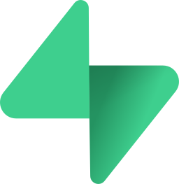

Daha iyi sorular.
Anlamlı çözümler.
Oyunu oynamadan okumak istersen: adadaki üç görev, gerçek işlerimin karşılığı. Görünür kıl, anla, kur.
RPA performans panosu
RPA hizmetinin değerini gösteren bir pano yoktu; robotlar çalışıyordu ama katkıları görünmüyordu.
İzlenecek KPI’ları önerip onaylattım: işlem sayısı, başarı oranı, robot ve manuel süreler, net zaman kazancı. Göstergeleri Figma’da tasarladım; robotlardan gelen veriyi Supabase’de toplayan yapıyı kurdum.
→ Sıfırdan kurulmuş, ~50 kişinin kullandığı bir pano.
Süreç keşfi ve otomasyon
Her müşteride hangi sürecin otomasyona değeceğini bulmak gerekiyordu.
Müşteri görüşmelerinde 20’den fazla süreci analiz edip uygun olanları belirledim, PDD’leri yazdım ve ekibin işlerini Jira’da düzene oturttum.
→ 20’den fazla robot canlıda; manuel sürelere göre ~%70 zaman kazancı.
Portal ve web siteleri
Robotun işleyeceği veri iş biriminin elindeydi.
İş biriminin veriyi girdiği, robotun bu girdiyle arkada çalıştığı ve sonucun geri döndüğü portallar tasarladım. 5–6 portal ve siteyi fikir aşamasından canlıya kadar uçtan uca yürüttüm: API entegrasyonları, sunucu ve domain dahil.
→ İş birimi robotla tek ekrandan çalışıyor: veriyi giriyor, sonucu aynı yerde görüyor.
Karakter geçmişi
RPA performans panosu, süreç analizi ve otomasyon, uçtan uca portal ve web çözümleri.
ÜÇ GÖREVİN DE KAYNAĞISağlık, e-ticaret ve çağrı merkezi projelerinde gereksinim analizi, raporlama otomasyonu ve Power BI panelleri.
Google’ın Strateji & Operasyon ekibiyle SDD tabanlı süreç tasarımı; ABD, Hindistan ve Yunanistan’daki paydaşlarla.
Envanter

Supabase